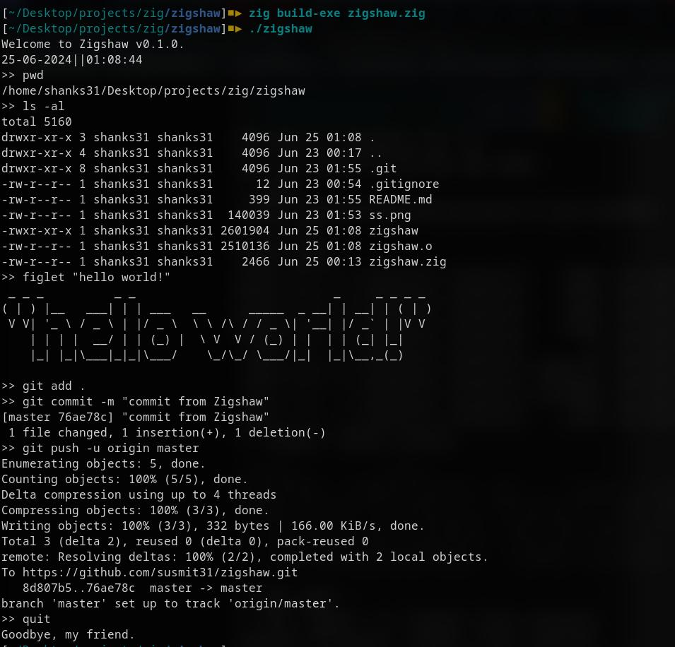

Writing a Simple UNIX-like Shell in Zig
- tags
- #Programming #Zig #Computer-Science
- published
- reading time
- 6 minutes
This is the first in (hopefully) a series of posts I intend to make about stuff I try out in the Zig programming language. After having been exposed to it for around 5 days, I’ve started to develop a sort-of love-hate relationship with the language. The syntax, in general, feels great to me. It’s low-level, compiled, fast. But on the other hand, the documentation, especially that of the standard library, is horrendous - virtually nonexistent, apart from a cryptic comment for every function, struct or whatever. Existing tutorials are often out-of-date owing to the fact that the language is still hasn’t had a full 1.x release, and “old” unwanted features are apparently being dropped by the devs every now and then.
My troubles notwithstanding, after giving up a couple of times, I decided to dive into the source code and try figuring things out by myself. What follows is the product of my adventures into this uncharted territory. But be warned, at the time you’re reading, even this code might have become outdated. This code was written and tested with Zig verion 0.14 on Debian 12, so keep that at the back of your head as you go through this. (Much of the code should stay the same regardless your OS, as long as you use a POSIX-compliant shell such as Git Bash, for example.)
The basics
Of course, we start by importing the standard library.
const std = @import("std");
Note that all lines in Zig code, like C and C++, must end in a semicolon.
Next up, we make available the standard input (for receiving user input) and the standard output (for printing stuff, obviously).
const stdin = std.io.getStdIn();
const stdout = std.io.getStdOut();
The main function
Now we head over to the main function. By the way, I named my shell “Zigshaw”. Hope that’s not too corny.
pub fn main() !void{
try stdout.writer().print("Welcome to Zigshaw v0.1.0\n",.{});
The !void return type means that the function will either return nothing (void), or an error (!). This is known as an error union datatype in Zig.
As we execute our shell commands, the programme will need to allocate memory dynamically on the heap. So we initialize a general-purpose allocator that Zig provides.
var gpa = std.heap.GeneralPurposeAllocator(.{}){};
const allocator = gpa.allocator();
For taking input, we will also need an input buffer. Recall that Zig has no built-in string support, and what we use instead are arrays of unsigned 8-bit integers.
var buffer: [1024]u8 = undefined;
Now after our introductory greeting, like any other good programme, I want to remind my user of how many days it’s been since he/she last stepped outside. So we create a child process for running the date command.
// The following command "inits" a child process struct.
// It takes in a slice (sort-of an array) of "strings" that make up the argument vector,
// and a memory allocator for the purposes of running the command.
var date_child = std.process.Child.init(&[_][]const u8{"date", "+%d-%m-%Y||%T"}, allocator);
_ = try date_child.spawnAndWait();
Note that in Zig, you can’t compile a programme if you have an unused variable. Similar to Go, if something a function returns is to be discarded, we store it in an underscore (_). In case of the argument vector containing the command, the underscore means that the array length is to be inferred, which in this case is 2.
The protagonist shows up
Our next task, the meat of our work, is in the next line of code.
try looper(&buffer, allocator);
}
This call to the looper function ends our main function. What does looper do? It will basically run a REPL, i.e. a Read-Eval-Print Loop. In other words, it will
- Receive user input.
- Parse it in any way necessary.
- Evaluate the parsed expression.
- Print the output.
And repeat. For the purposes of running commands from child processes, we need to supply looper with a memory allocator. And for receiving user input, we supply the string buffer we defined earlier. Here’s the code.
fn looper (buffer: *[1024]u8, allocator: std.mem.Allocator) !void{
var input: []const u8 = undefined;
var splitted: [][]const u8 = undefined;
As we’ve seen earlier, the child process takes an argument vector, i.e. a list of strings in which the first is the command to be run, and the following strings are the arguments of said command. For this, we need to split the user input up by whitespaces. And that is what we will be storing in the splitted variable.
Next up, the “infinite” loop.
while (true) {
// Prompt
try stdout.writer().print(">> ", .{});
// Input
input = (try stdin.reader().readUntilDelimiterOrEof(buffer, '\n')).?;
if (input.len < 1) {
continue;
}
// Programming a way out of the loop (apart from CTRL + C)
else if (std.mem.eql(u8, "exit", input) or std.mem.eql(u8, "quit", input)){
try stdout.writer().print("Goodbye, my friend.\n", .{});
return;
}
// Splitting the input line
splitted = split(input);
// Spawn child process
var child = std.process.Child.init(splitted, allocator);
_ = child.spawnAndWait() catch |err| {
std.debug.print("{}\n", .{err});
continue;
}
return;
}
}
Now the function split we used to split the input line is yet to be implemented. Let’s do that now.
fn split (str: []const u8) [][]const u8 {
var splitted_arr: [1024][]const u8 = undefined;
var curr_start: usize = 0;
var curr_loc: usize = 0;
var i: usize = 0;
var closed_quotes: bool = true;
The other variables will be self-explanatory as you see the rest of the code. The closed_quotes variable has another purpose. As we will be splitting by whitespaces, there will be cases when a string, surrounded by quotes, will be split into separate arguments. For example, echo "Hello world!" will be interpreted as: run the command echo with two arguments: "Hello and world!". However, this is not how the echo command works - the entire sentence to be printed has to be interpreted as one language. So we use the boolean variable closed_quotes to tell ourselves whether we have any “unclosed quotes” or not - if closed_quotes is true, it means all quotes have been closed so far, and it’s OK to split at whitespaces. If it’s false, then we have an unclosed quote, and until we encounter the next quote ("), we cannot split this string at a whitespace.
Okay, let’s continue our speedrun through the rest of the code. We’re in the endgame now.
while (curr_loc < str.len) : (curr_loc += 1) {
if (std.mem.eql(u8, str[curr_loc..curr_loc+1], " ")){
if (closed_quotes) {
splitted_arr[i] = str[curr_start..curr_loc];
curr_start = curr_loc + 1;
i += 1;
}
// Flipping the boolean each time we encounter a quote
else if (std.mem.eql(u8, str[curr_loc..curr_loc+1], "\"")){
closed_quotes = !closed_quotes;
}
}
}
splitted_arr[i] = str[curr_start..curr_loc];
i+=1;
return splitted_arr[0..i];
}
This has obviously been a rather basic implementation, but it’s good enough for me to call it a day. Once you’ve written the entire code, compile it into a binary and enjoy.
$--> zig build-exe zigshaw.zig
$--> ./zigshaw
And you should see something like the following image:

So that’s all for today. Hope this has been of help. Goodbye, my friend!